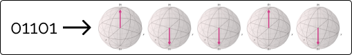

Imagine this scenario: two people, Alice and Bob,
want to share a highly confidential message. They
are scared their message will be intercepted, so
they want to encrypt it. First of all, they have to
settle on an encryption key. But how will they
transfer the key to each other? If the key is
intercepted, then there's no point in encrypting the
message. They need a more secure way to transfer the
key! They can use Quantum Key Distribution!!
There are several versions of QKD; we'll focus on
the BB84 version:
Note that the key they want
to transfer is "01101".

Without Eavesdropper
Alice encodes the key into qubits into the plus and
minus states. She then randomly puts some of her qubits
in superposition (You'll see why later). E.g. the third
and last qubits. She transfers the state "01-0-".
Bob receives the qubits and applies a Hadamard to some
random qubits. His goal is to try to guess which ones
Alice put into superposition and take them out of it. He
settles on the 1st and 5th qubits, and the state becomes
"+1-01". He collapses the state and measures "11101".
This is not the original key, but don't worry; we'll see
how they fix the issue in the next step.
They then relay to each other which qubits they put into
superposition and which they didn't on a classical
channel. For instance, in the following example, Alice's
would correspond to "NNSNS", and Bob's would be "SNNNS".
They ignore the ones they disagree with. They both end
up with the state 101 as the key!
With Eavesdropper
Issue solved? Well, almost, but not entirely. What if
Eve (an eavesdropper) was listening?
Let's run through the scenario again. The first few
steps will remain the same. However, when Alice
transfers the state, Eve will measure the key. She can
apply Hadamards like Bob did or measure them by
collapsing the superposition. For example, if she
applies a Hadamard gate on the 5th qubit. The state will
change from "01-0-" to "01-01". Bob is unaware of this
and continues on. Once again, he applies the Hadamard
gate on the 1st and last qubits. He gets the state
"+1-0-" and measures 11000.
The procedure will continue as normal. However, after
discarding the 1st and 3rd qubits, Alice ends up with
the key 101 and Bob with 100. To stop this from
happening, they double-check if there have been any
eavesdroppers. They compare some bits of the key and
look for any disparities. They notice that the last
qubit has been tampered with, so they change the channel
and repeat.
This procedure will include way more than 5 bits! Even
if you discard and sacrifice half your bits but have 100
remaining, you will have enough to form a secure
encryption key!
Finally, some of you might think that the procedure
could easily be breached if Eve copies the state of the
qubits and also intercepts the classical communication
where they tell each other which qubits have had a
Hadamard applied to them. However, due to the no-cloning
theorem, Eve can't copy the state in the first place!
Alice and Bob can now share their secret message
confidentially.